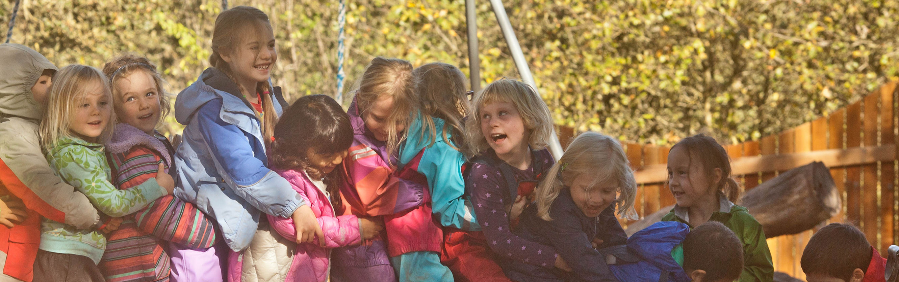
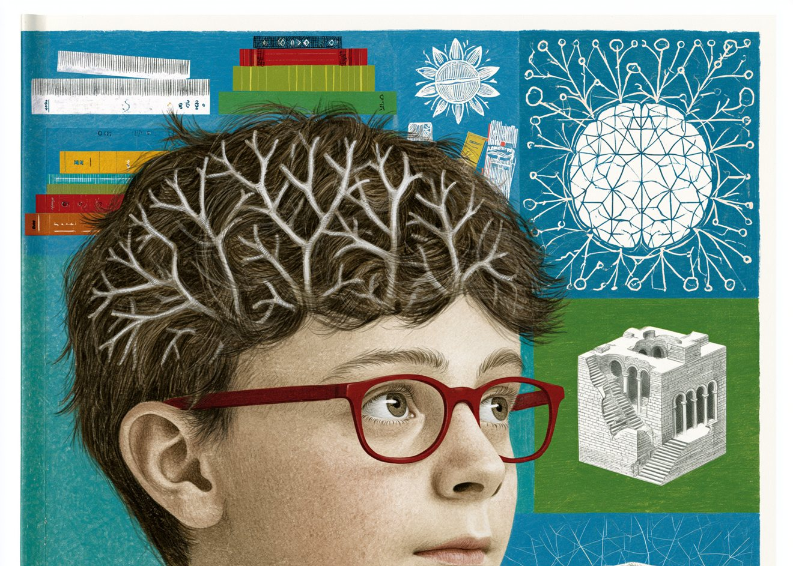
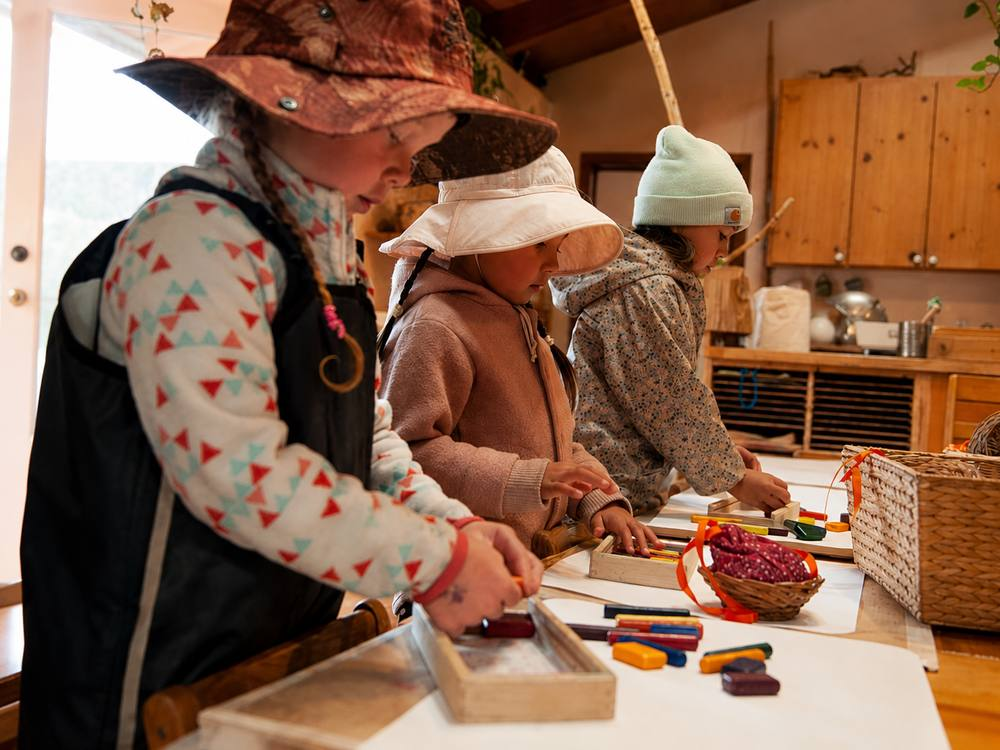

Imaginative Learning
Free, imaginative play and purposeful work — kneading bread, sweeping, building, caring for the room. Through meaningful play, children learn to think, solve, and do.

Ages 4–6 · Serving Sonoma County
For more than 50 years, Summerfield’s Waldorf kindergarten has met children at a pivotal stage of growth. Each rhythm, material, and lesson is chosen with intention, supporting the developing mind and cultivating the focus, curiosity, and independence on which all future learning is built.
Kindergarten Curriculum
Free, imaginative play and purposeful work — kneading bread, sweeping, building, caring for the room. Through meaningful play, children learn to think, solve, and do.
The brain's core architecture is wired in the early years. Our program builds rich connections across attention, memory, regulation, and language — developing the whole child, body and mind, on which all later learning depends.
Singing, painting, modeling, handwork — color, song, and story are woven through every day. The arts build focus, fine motor skills, and a lifelong love of beauty.
Reading others, working through conflict, steadying big feelings. In a mixed-age classroom where teachers model calm and gently guide, children develop the social fluency and self-regulation that last a lifetime.
Digging, planting, climbing, tending animals — outdoors in all weather, across every season. On the farm and beyond, children grow a rooted connection to the living world.
Wonder, merriment, awe — these are the gifts of early childhood, and we work to preserve them. Every child is known, met with patience, and woven into a community that cares for them.
(optional aftercare until 5:30 pm)
1:11 teacher to child ratio, led by experienced, caring teachers.
Our Kindergarten
The kindergarten years carry a child from early childhood toward the threshold of formal learning. We've shaped every detail of the day — and every corner of the classroom — to honor what that passage asks of them.
Our combined TK and kindergarten classroom brings together children ages 4 to 6 in one room, resulting in one of the quiet but transformative gifts of Waldorf early childhood. Younger children learn by watching the older ones — how to thread a needle, how to wait for a turn at the painting easel, how to carry a task through from start to finish. They aspire, and slowly and naturally they grow into doing these things themselves.
The eldest children, in their final year, step fully into roles of leadership: guiding a younger friend through a hard moment, organizing a game, being trusted with the day’s most important jobs. Their confidence and capability flourish in ways no single-age classroom can offer, and this final year gently prepares them for the transition into first grade.
Because children stay with the same teacher and the same circle of friends across their TK and kindergarten years, what unfolds is a deep, lived sense of belonging — something parents often describe as the relief of knowing their child is truly known.
Our combined TK and kindergarten classroom brings together children ages 4 to 6 in one room, resulting in one of the quiet but transformative gifts of Waldorf early childhood. Younger children learn by watching the older ones — how to thread a needle, how to wait for a turn at the painting easel, how to carry a task through from start to finish. They aspire, and slowly and naturally they grow into doing these things themselves.
The eldest children, in their final year, step fully into roles of leadership: guiding a younger friend through a hard moment, organizing a game, being trusted with the day’s most important jobs. Their confidence and capability flourish in ways no single-age classroom can offer, and this final year gently prepares them for the transition into first grade.
Because children stay with the same teacher and the same circle of friends across their TK and kindergarten years, what unfolds is a deep, lived sense of belonging — something parents often describe as the relief of knowing their child is truly known.
Our children spend long, unhurried hours outdoors — in every season, in nearly every weather.
Their days unfold beneath a canopy of old oaks, on a playscape that blends natural materials with thoughtfully built structures. A wooden platform becomes a ship, a stage, a bench for storytelling; a stump becomes a stool or a stepping stone; mud-pie kitchens invite small hands to mix, pour, and serve. A child outdoors is a child becoming themselves — climbing teaches the body where it ends and the world begins, and watching a beetle cross a stone is, for a five-year-old, a serious scientific endeavor.
Just beyond the playscape lies our working biodynamic farm, where the children visit each week. They feed the chickens, gather warm eggs from the nest, greet the sheep and goats, and pull carrots they helped plant from the earth. The farm makes the cycles of food, work, and care into something visible, tangible, and intimately their own.
Across the year, the same beloved ground offers new gifts: acorns to gather and leaves to leap into in autumn, frost to inspect in winter, puddles to splash in spring, and a humming summer garden grown by the children themselves.
Children in our TK and kindergarten grow up inside a year shaped by seasonal festivals. We mark Michaelmas in early autumn with stories of courage and a shared harvest meal. In late autumn, we walk together at dusk carrying paper lanterns the children have made, singing softly as the light grows smaller around us — a quiet practice of carrying our own light into the darkening months. December brings the candlelit path of the Advent spiral; spring brings flower crowns and ribboned poles for May Day; summer ends with water play and tender goodbyes to the children who are moving up to first grade.
These festivals are more than performances or productions — not tied to any one faith tradition — they are gentle, seasonal rituals, welcoming families of every background. They give children a felt sense of the year’s shape — a deep memory of how darkness gives way to light, how seed becomes harvest, how community gathers and disperses and gathers again. By the time a child leaves our kindergarten, the rhythm of the year is something they carry inside them.
What grows around these festivals is not a calendar of events but a community — a web of relationships that holds your child, and your family, well beyond any single year.

Early Childhood
Early childhood is a period of rapid brain development. In these years the brain forms synaptic connections faster than at any later stage and prunes those it doesn’t use, laying the structural foundation for cognition, emotional regulation, and lifelong learning. Early experience doesn’t simply add knowledge—it shapes the architecture on which all later learning is built.
This is why the texture of a child’s days matters so much. Summerfield’s early childhood programs are intentionally designed to support the strength and future capacity of that architecture. A steady daily rhythm, natural materials, and long hours of movement, imitation, and self-directed play are each chosen to engage the systems the developing brain is building:
Focus, working memory, impulse control, flexible thinking. Supported by open-ended play, real responsibilities, and activities that require planning and persistence.
Processing emotion, managing stress, returning to a regulated state. Early experience shapes a child’s developing capacity to regulate strong affect and recover from frustration.
Organizing input from the body and environment: touch, movement, balance, spatial awareness. This foundational capacity underlies attention, regulation, and later academic skills.
Movement, balance, coordination, fine motor control. Motor and cognitive development are closely linked; in early childhood, movement is a primary mechanism of learning.
Comprehension, expression, vocabulary, symbolic thinking. Develops through conversation, storytelling, song, and meaningful interaction rather than rote instruction.
Empathy, perspective-taking, collaboration. Established through direct social experience rather than explicit instruction.
Encoding and retrieving meaningful experience. Early memory is supported by emotional salience, context, and narrative rather than repetition.
Curiosity, engagement, intrinsic motivation. Experiences of mastery and agency reinforce the association between effort and reward.
These systems—memory, language, motor control, emotion, attention, and social cognition—don't develop in isolation. They mature in relationship with one another, each scaffolding the rest, and the brain spends these early years building the connections between them. This is neural integration: the wiring that lets separate capacities work together as one coordinated whole. A child whose attention, memory, and emotional regulation are richly connected isn't simply more capable in each—they can draw on all of them at once, fluidly, when something new is asked of them.
Integration is built through experience, and the research is consistent about what kind: experiences that engage several systems at the same time. This is what self-directed activity does so well. A child absorbed in cooperative play is coordinating movement, holding attention, exercising memory, reading social cues, and steadying strong feelings all at once—the very conditions under which the brain's systems knit together. Our days are built to create those conditions, not to drill each skill apart from the others.
Waldorf education has worked this way for over a century, long before neuroscience could explain why. The rhythms it has always held to—the primacy of movement, imitation, and unhurried play—are what contemporary research now describes in the language of synapses and integration. At Summerfield we hold both: a time-tested approach to the early years, and a growing body of science that affirms and sharpens it.
These developmental principles inform our caution regarding the early introduction of formal academic instruction. Direct drilling of literacy and numeracy in four- to six-year-olds can yield measurable short-term gains, but often at the cost of the broader neural integration the brain is primed to undergo during this period. Skills acquired before their developmental prerequisites are in place tend to be less durable; the capacities established through play, movement, narrative, and direct experience provide a more stable foundation.
The risks extend beyond durability. Early academic advantages frequently fade as peers catch up, and in some cases the initial gains reverse over time. More concerning are the less visible costs: pressure to perform abstract tasks before a child is developmentally ready can introduce stress, frustration, and an early sense of failure that shapes a child's relationship with learning itself. It can quietly erode the curiosity and intrinsic motivation that sustain learning over the long term. And every hour spent on premature drills is an hour not spent on the play, movement, and social experience that build the very foundation those academic skills will later depend on.
Summerfield's early childhood programs are designed to protect this developmental window—not by delaying learning, but by sequencing it in accordance with how the brain develops. The aim is not a later start, but a more durable foundation for the academic work ahead—and for everything a full life asks of a person.
Research & Studies
Effects of a Statewide Prekindergarten Program Through Sixth Grade
Studies Explore Reasons for the "Fade-Out" Effect
Persistence and Fade-Out of Educational-Intervention Effects
Premature Schoolification During Early Childhood Hinders Later Academic Success
The Association Between Academic Pressure and Adolescent Mental Health Problems: A Systematic Review
Promoting Executive Function Skills in Preschoolers Using a Play-Based Program
The Multiple Benefits of Motor Competence Skills in Early Childhood
Articles & Commentary
The New Preschool Is Crushing Kids
Early Academic Training Produces Long-Term Harm
Why Pushing Kids to Learn Too Much Too Soon Is Counterproductive
Play-Based Learning in Kindergarten Is Making a Comeback
The Way Kids Play Has Quietly Transformed
All Work and No Play in Kindergarten
A different kind of education
Waldorf education follows a long arc — one that develops the knowledge, skills, and habits of mind students need to earn entry to competitive universities and pursue any field of study, while also nurturing the intellectual, emotional, social, creative, and practical capacities that help them flourish throughout life.
“Being personally acquainted with a number of Waldorf students, I can say that they come closer to realizing their own potential than practically anyone I know.”
From our families
Common Questions
Yes. Our Kindergarten serves children ages 4–6, covering what would elsewhere be considered both Transitional Kindergarten (TK) and Kindergarten. Rather than separating these into distinct grades, we hold them together in a mixed-age setting where younger and older children learn alongside one another — younger children learn through the example of older ones, while older children grow in confidence and capacity as helpers and leaders.
Our days follow a steady, predictable rhythm that helps children feel secure and at home. A typical day unfolds like this:
This gentle alternation between active and quiet, indoor and outdoor, and gathering together and free play mirrors the natural rhythm of breathing in and breathing out — a hallmark of the Waldorf early childhood day.
The kindergarten year is a time for building the foundation, not rushing the outcome. Drilling literacy and numeracy at this age can produce measurable short-term gains — but those gains often fade by second or third grade, and they can come at the cost of the broader neural integration the brain is primed to undergo at this age.
Reading, writing, and arithmetic are fundamentally abstract: a letter stands for a sound, a numeral for a quantity. The capacity to work fluently with abstraction grows out of years of concrete, embodied experience — handling real objects, moving through space, and entering imaginative worlds where one thing can stand for another. When we rush a child into symbols before that groundwork is laid, the learning sits on a thinner footing. Skills built before their developmental prerequisites are in place tend to be less durable. Just as important, pressure to perform before a child is ready can introduce stress and an early sense of failure — quietly eroding the curiosity and intrinsic motivation that sustain learning over a lifetime, and weakening the self-regulation and executive function that academic work later depends on.
So rather than delay learning, we sequence it — prioritizing the play, movement, narrative, and social experience that build that foundation. Our kindergarten cultivates the capacities — focus, memory, fine and gross motor coordination, and a love of story — that prepare children to meet first grade ready for formal academics. The aim is not a later start, but a more durable one: children who meet formal learning, and ultimately life, with confidence, curiosity, and enthusiasm.
Go deeperRead our full approach to early learning & what the research shows →
Summerfield Waldorf School & Farm is located in Santa Rosa, California, in the heart of Sonoma County. Our campus sits on a beautiful, biodynamic farm and natural landscape, offering children daily connection to nature as part of their school experience.
Families come from throughout West Sonoma County and the surrounding region — including Sebastopol, Santa Rosa, Forestville, Occidental, Graton, Guerneville, Windsor, Healdsburg, and Rohnert Park, as well as communities across Sonoma County.
Some families have chosen to relocate to Sonoma County specifically to be part of Summerfield’s Waldorf-inspired program. Others come from the East Bay — including Berkeley, Oakland, and San Francisco — as well as from across California and other parts of the country to join this community.
Our Kindergarten serves children from ages 4 (by June 1st) to 6. Because the first year often serves as a TK year, readiness is considered alongside age. Many children spend more than one year in kindergarten, and our teachers work closely with families to determine the right timing for each child. Please see our admissions page for current age and readiness guidelines.
Tuition assistance is available for students in Kindergarten through 12th grade. We encourage families to explore our financial aid options as part of the admissions process.
All children enrolling must be up to date on all age-appropriate immunizations prior to enrollment, with immunizations maintained throughout the school year.
In accordance with California state law, immunization exemptions are no longer accepted for private schools. Please refer to our Immunization Policy for full details.
Yes. We offer wholesome, nutritious meals and snacks each day. Our menu features simple, nourishing recipes refined over more than 50 years — foods that children truly enjoy. Children often help with simple preparation, and whenever possible, ingredients are fresh and seasonal, with some coming directly from our school farm.
Yes. Our Farm Camp is held in our Kindergarten Village and offers a gentle, nature-rich summer experience. Through crafts, song, storytelling, and play — along with time on the Farm and in the Permaculture Garden — children meet the rhythms of the natural world: caring for animals, gathering food, and engaging in meaningful work. These experiences nurture a sense of wonder, reverence, and connection to the living world.
Children turning 6 can also join our Circus Camp (ages 6–8), a fun and supportive way to experience a variety of circus arts and related crafts — juggling, unicycling, tumbling, clowning, and springboard & mat work. Each Friday closes with a showcase performance for families, highlighting the skills learned during the week.
Yes — visiting the campus is one of the best ways to experience the warmth and rhythm of the kindergarten firsthand. Tours offer a chance to see the classrooms, spend time in the outdoor spaces, and get a feel for the daily life of the program. You’ll also meet faculty and ask any questions about your child and the admissions process.
For more details or to schedule a visit, please see our Visit Us page.
The admissions process begins with an inquiry and a tour of the campus. Visit our admissions page for more information.
A tour is the best way to feel the warmth and rhythm of the kindergarten — and the wider Summerfield community it lives within. Spend a morning with us.
Schedule a visit